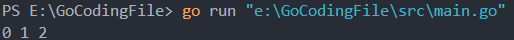

命令
xxx代表文件的绝对路径
只运行不编译
1
go run xxx
编译文件
1
go build xxx
生成工程项目
1
go install
小知识点
go语言中每一个工程项目都需要有一个main包，这个包中的main函数是程序的入口点
1
package main
go语言中函数的花括号的前括号不能单独一行
✔
1
2
3func main() {
defer fmt.Println("Hello World")
}❌
1
2
3
4func main()
{
defer fmt.Println("Hello World")
}go语言中声明的变量必须使用，否则报错
变量（常量）的声明和赋值
- 标准声明（先声明在赋值）
1
2var variable_name int //variable_type
variable_name = 10 - 简化声明，自动推导类型
1
variable_name := 10
- 多重声明
1
2//相同类型
var a, b, c int1
2
3
4
5
6
7//不同类型先声明后赋值
var(
a int
b float32
)
a = 10
b = 1.11
2
3
4
5//声明时赋值
var(
a int = 10
b float32 = 1.1
)1
2//简化写法
var a, b = 1, 1.11
2//自动推导类型
a, b, c := 1, 1.1, "Tom"匿名变量
go语言中存在匿名变量，用下划线表示，多用于接受函数返回值时使用，例子上面代码anon_var函数返回三个值，但是我只想接收第一个和第三个，就是用匿名变量来忽略第二个返回值1
2
3
4
5
6
7
8
9
10
11
12
13
14package main
import (
"fmt"
)
func anon_var() (a, b, c int) {
return 1, 2, 3
}
func main() {
a, _, c := anon_var()
fmt.Println(a, c)
}
iota枚举
iota是go语言中的常量计数器，只能作用于常量const，例子如下
1 | const ( |

1 | //简化写法 |
循环
go语言中循环只有一种方式，for(range算迭代的话)，下面贴使用方法
不加任何条件：无线循环，除非使用break跳出循环
1
2
3
4
5func main() {
for {
fmt.Println("fish")
}
}普通使用方法：与c语言格式类似
1
2
3
4
5func main() {
for i := 0; i < 10; i++ {
fmt.Println(i)
}
}与while循环格式类似的写法
1
2
3
4
5
6
7
8
9
10
11
12
13func main() {
sum := 1
for ; sum <= 10; {
sum += sum
}
fmt.Println(sum)
// 这样写也可以，更像 While 语句形式
for sum <= 10{
sum += sum
}
fmt.Println(sum)
}与range一起使用
1
2
3
4
5
6
7
8//i代表下表，data代表数据
func main() {
str := "Hello Go"
for i, data := range str {
fmt.Println(i, data)
}
}